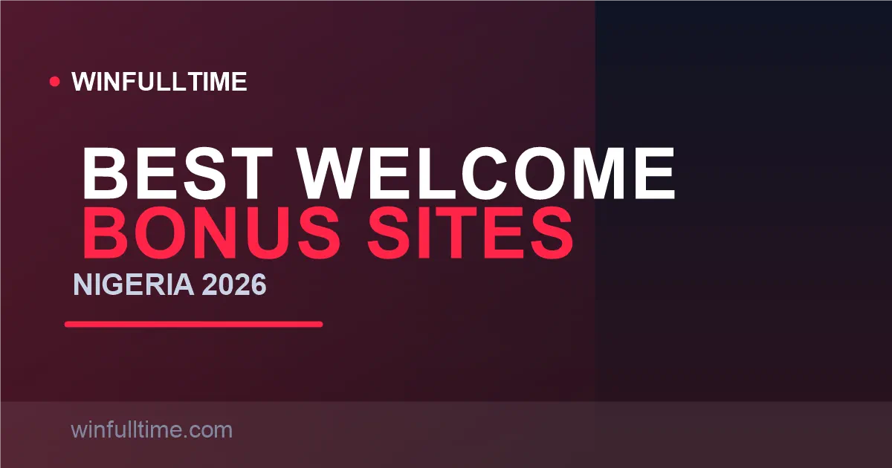

Best Welcome Bonus Betting Sites in Nigeria 2026: Ranked & Explained Honestly

The headline percentage means almost nothing. A 300% bonus you can never unlock is worth less than a 100% bonus you actually convert to cash. We ranked Nigeria's welcome bonuses by real value — combining bonus size, wagering cost, odds thresholds and how likely an average bettor is to clear the terms — so you can pick the one that genuinely fits how you bet.

What Actually Makes a Bonus Valuable
Four numbers decide whether a welcome bonus is worth your time, and only one of them is the headline percentage:
- Bonus size — the percentage and the cap (e.g. 300% up to ₦1,200,000).
- Wagering multiplier — how many times you must turnover the bonus (5x, 6x, 10x) before winnings are withdrawable.
- Odds and bet-type thresholds — bonuses that only count on accumulators at 1.40+ or even 3.00+ odds are dramatically harder to clear than flexible ones.
- Time limit — most Nigerian bonuses expire 30 days after credit; a shorter window can make a large bonus unreachable.
The trap that catches most bettors: a big bonus with heavy wagering converts to real money far less often than a modest bonus with light terms. We have ranked by "conversion likelihood" as much as by headline size.
1. 1xBet Highest Headline Ceiling
1xBet offers the single biggest welcome bonus in Nigeria: 300% on your first deposit up to ₦1,200,000. On paper that dwarfs every local operator — deposit ₦400,000 and you get ₦1,200,000 in bonus funds. The 300% match also works for more modest deposits, making the percentage genuinely generous at every level.
The cost is the wagering. The bonus must be cleared at 5x on accumulator bets with a minimum of three selections at 1.40+ odds per leg, within 30 days. At high stakes that 5x becomes a very large turnover, so the practical value favours bettors who will generate real accumulator volume regardless. Combine that with 1xBet's enormous market depth and flexible local payments, and it is the strongest headline offer in the market — for those who can actually clear it.
Pros
- Highest headline bonus in Nigeria
- Enormous market coverage
- Flexible local payment methods
- Instant deposits and fast payouts
Cons
- 5x wagering on 1.40+ accas is genuinely hard
- Bonus often sits mostly unclaimed at high stakes
- Cluttered, power-user interface
Verdict: Best raw value on paper and for high-volume accumulator bettors; the hardest to clear for casuals.
2. SportyBet Best All-Round Value
SportyBet's 150% match up to ₦100,000 is the sweet spot of the Nigerian market, and it is the offer we rate highest for real-world value. The wagering is a manageable 5x on accumulator bets with minimum 3 selections at 1.40+ odds per leg, within 30 days — no promo code required, a low ₦100 qualifying deposit, and a fast, clean app.
The key reason it ranks above the bigger headline bonuses is conversion: SportyBet has among the highest bonus conversion rates of any Nigerian platform, because the 5x requirement and achievable 1.40+ odds thresholds are clearable for regular accumulator bettors. A ₦20,000 deposit credits ₦30,000 in bonus funds needing ₦150,000 in qualifying accumulator turnover — realistic for someone who bets weekend accas.
Pros
- Best genuine conversion rate in Nigeria
- Manageable 5x wagering terms
- No promo code required
- Superb, fast mobile app
Cons
- Cap lower than 1xBet or Betway
- Online only — no retail shops
Verdict: The pick for most bettors — high enough value, low enough friction that you will actually clear it.
3. Bet9ja Nigeria's Biggest Brand
Bet9ja's 170% first-deposit match up to ₦100,000 sits on Nigeria's most trusted brand, making it the default choice for millions of local bettors. Register with a promo code, fund at least ₦100, and your first deposit is boosted by 170% — a ₦5,000 deposit becomes ₦8,500 in bonus funds on top.
The trade-off is Bet9ja's heavier wagering: commonly 6x to 10x on accumulator bets at minimum odds of 3.00, within 30 days. That higher odds floor and multiplier make the full ₦100,000 bonus genuinely hard to unlock — to clear a ₦100,000 bonus at 10x you need ₦1,000,000 in qualifying turnover. For bettors who stick to modest deposits and already bet large accumulators, it remains excellent value on a brand they trust.
Pros
- Nigeria's most trusted betting brand
- Largest market coverage (120+ NPFL markets)
- Retail shops + online + booking codes
- Strong 170% headline match
Cons
- Harsh 3.00+ odds on wagering
- 6x–10x multiplier is hard to clear
- Promo code required at sign-up
Verdict: Choose it for brand trust and market depth; be realistic that the full bonus needs heavy accumulator volume to unlock.
4. BetKing No-Deposit & Most Accessible
BetKing stands alone with a genuine no-deposit welcome offer: register and receive ₦100 in free bets plus 10 free Aviator flights, with no qualifying deposit required. It is the lowest-friction start in the market — you can test BetKing's platform, odds and withdrawal process entirely before risking your own money.
For those ready to deposit, BetKing also runs deposit-match promotions (commonly 100% up to ₦50,000 or similar), and its broader product — the 300% accumulator boost and FlexiCut insurance — adds long-term value beyond the welcome offer. BetKing's terms are widely considered the clearest in the Nigerian market, which is why it is the top pick for first-timers and casual bettors.
Pros
- Only genuine no-deposit welcome in Nigeria
- Zero risk to test the platform
- Clear, plain-language terms
- 300% acca boost + FlexiCut
Cons
- ₦100 free bet is small in absolute value
- Deposit-match cap below SportyBet or 1xBet
Verdict: The best starting point for beginners — free to enter, zero risk, clearest terms.
5. Betwinner 200% up to ₦130,000
Betwinner offers a strong 200% first-deposit bonus up to ₦130,000, cleared at 5x on accumulator bets of three or more selections at 1.40+ odds per leg within 30 days. That puts it high on headline value while keeping the wagering at the friendlier 5x level shared with SportyBet.
It combines well with Betwinner's deep live sportsbook, virtual sports and fast local bank withdrawals. For bettors who want a 200% match with a manageable multiplier, Betwinner is a genuinely competitive choice — arguably the best of the "200%-class" offers when you factor in the low 5x wagering against operators that demand more for similar percentages.
Pros
- Genuine 200% match at manageable 5x
- Deep live and virtual catalogue
- Fast local bank withdrawals
Cons
- Cap lower than 1xBet's ceiling
- Global interface can feel busy
Verdict: The best value in the 200% class — a big percentage with only 5x wagering to clear.
6. 22Bet, Betway & Melbet
22Bet (100% up to ₦207,500) pairs a high cap with a simple 5x requirement — a strong choice for larger deposits. Betway (100% up to ₦200,000) is worth calling out for writing the clearest, most readable wagering terms in the Nigerian market, which matters if transparency is your priority. Melbet (200% up to ₦480,000) offers the biggest ceiling in the 200%-class alongside a huge virtual catalogue.
All three are solid secondary or value-focused picks. The reason none crack the top five for most bettors is that their term structures or caps place them slightly behind the operators above on the specific balance of size, wagering cost and odds thresholds that suits typical Nigerian players.
Pros
- High caps across all three
- Betway has the clearest terms
- Melbet adds a huge virtual catalogue
Cons
- 22Bet/Betway 100% below the 150%+ leaders
- Melbet's 200% carries stricter conditions at cap
Verdict: Great value-focused alternatives — 22Bet for big deposits, Betway for clearest terms, Melbet for virtual-heavy bettors.
Welcome Bonus Comparison Table
| Operator | Bonus | Max Bonus | Wagering | Odds Floor | Min Deposit |
|---|---|---|---|---|---|
| 1xBet | 300% | ₦1,200,000 | 5x | 1.40+ acca | ₦100 (local) |
| SportyBet | 150% | ₦100,000 | 5x | 1.40+ acca | ₦100 |
| Bet9ja | 170% | ₦100,000 | 6x–10x | 3.00+ acca | ₦100 |
| BetKing | Free bet | ₦100 (no deposit) | N/A | N/A | None |
| Betwinner | 200% | ₦130,000 | 5x | 1.40+ acca | ₦250 |
| 22Bet | 100% | ₦207,500 | 5x | 1.40+ acca | ₦250 |
| Betway | 100% | ₦200,000 | 6x | Standard | ₦100 |
| Melbet | 200% | ₦480,000 | Varies | 1.40+ acca | ₦250 |
Bonus terms verified August 2026 from operator pages and regional review data; percentages, caps and wagering rotate frequently, so always confirm the live offer on the operator's promotions page before depositing.
Promo Codes at a Glance
Some operators need a promotional code entered at registration; others credit the bonus automatically. Getting this wrong is the most common way new bettors miss out entirely, so here is the breakdown:
| Operator | Welcome Bonus | Promo Code? | Example Code |
|---|---|---|---|
| 1xBet | 300% up to ₦1,200,000 | Sometimes required | Site-specific |
| SportyBet | 150% up to ₦100,000 | No code needed | — |
| Bet9ja | 170% up to ₦100,000 | Yes | Site-specific |
| BetKing | ₦100 free + Aviator | Yes | BONUSKG |
| Betwinner | 200% up to ₦130,000 | Yes | Site-specific |
| 22Bet | 100% up to ₦207,500 | No code needed | — |
| Betway | 100% up to ₦200,000 | No code needed | — |
Codes change frequently and vary by referral channel. Always use the current code displayed on the operator's official promotions page when you register.
Worked Example: How Wagering Really Works
Let's put real numbers on it so "5x wagering" stops being abstract. Say you claim SportyBet's 150% bonus with a ₦10,000 first deposit:
- Bonus credited: 150% × ₦10,000 = ₦15,000 in bonus funds.
- Wagering requirement: 5 × ₦15,000 = ₦75,000 in qualifying bets.
- Qualifying bets must be accumulators of 3+ selections at 1.40+ odds each, placed within 30 days.
- If you stake ₦2,000 accumulators three times a week, that is ~12–13 bets — comfortably clearing ₦75,000 within the month.
Now the same deposit on Bet9ja's 170% with a 10x requirement: bonus is ₦17,000, needing ₦170,000 in turnover at 3.00+ accumulator odds — roughly double the workload AND a much higher odds floor. On 1xBet's 300% the bonus is ₦30,000, needing ₦150,000 in turnover at 1.40+ accas. In every case, the bonus only becomes real money once that target is met — and if you cannot reach it in 30 days, the bonus expires.
The lesson: a smaller percentage with a lower multiplier can beat a bigger headline number you will never clear. Match the bonus to the volume you realistically bet.
Which Bonus Fits Your Profile?
Casual / first-timer
BetKing's no-deposit ₦100 free bet. Zero risk, no wagering on your own money, and the clearest terms — the ideal way to learn the platform before committing a deposit.
Regular accumulator bettor
SportyBet's 150% up to ₦100,000. Its 5x requirement at 1.40+ odds converts most reliably of the deposit-match offers — the best actual cash value for consistent weekend acca players.
High depositor chasing maximum value
1xBet's 300% up to ₦1,200,000, or 22Bet/Betway in the 100%-class for bigger caps. Make sure you can genuinely turn over the bonus volume; otherwise a smaller, clearer deal will pay out more in practice.
Brand trust + market depth
Bet9ja's 170% up to ₦100,000. The highest headline among local brands with the deepest NPFL and European coverage — ideal if an established name matters more to you than the easiest wagering.
The Five Traps That Kill Bonuses
Trap 1: Singles don't count
Nearly every Nigerian welcome bonus counts only accumulator bets toward wagering. If you prefer singles, your bonus never clears and silently expires. Pick a platform whose terms match how you actually bet.
Trap 2: The odds floor is higher than it looks
Bet9ja's 3.00+ accumulator requirement means a two-leg acca averaging 1.73 per leg is needed just to qualify. Heavy-favourite multiples often fall below the threshold and contribute nothing to your rollover.
Trap 3: The 30-day expiry
Most bonuses expire exactly 30 days after credit, not after first login. A large bonus with heavy wagering needs a genuinely busy month — count the realistic bets you can place before depositing big.
Trap 4: Missing the promo code
Bet9ja, BetKing and 1xBet require a code at registration. Enter a code after signing up and the bonus is forfeited. Check the current code on the official promotions page before you commit.
Trap 5: Unverified accounts delay payouts
Both SportyBet and Betway require BVN/NIN verification before your first withdrawal. Complete KYC early — an unverified account is the most common cause of a bonus win being stuck at cash-out.
Frequently Asked Questions
Which betting site has the best welcome bonus in Nigeria in 2026?
1xBet offers the highest headline welcome bonus in Nigeria at 300% up to ₦1,200,000, but its 5x wagering on accumulator bets at 1.40+ odds makes it hard to clear at high stakes. For bettors who actually convert their bonus, SportyBet's 150% up to ₦100,000 with a 5x requirement on accumulators is widely seen as the best real-world value, while BetKing's no-deposit ₦100 free bet is the most accessible.
Is there a no-deposit welcome bonus in Nigeria?
Yes. BetKing offers a genuine no-deposit welcome bonus — register and receive ₦100 in free bets plus 10 free Aviator flights, with no qualifying deposit required. This makes it the only major Nigerian operator where you can test the platform and withdraw process before risking your own money.
Do Nigerian welcome bonuses have wagering requirements?
Yes, every Nigeria welcome bonus carries a wagering (rollover) requirement before bonus funds become withdrawable. Typical multipliers run from 5x to 10x the bonus amount, and most requirements must be met on accumulator bets at minimum odds of 1.40 to 3.00 within a 30-day window.
Do I need a promo code to claim a Nigerian welcome bonus?
It depends on the operator. Bet9ja, BetKing and 1xBet usually require a promo code entered at registration (such as BetKing's BONUSKG). SportyBet, Betway and 22Bet typically credit the bonus automatically once you make a qualifying deposit, with no code needed.
Which Nigerian welcome bonus is easiest to clear?
For casual bettors, BetKing's no-deposit free bet has no wagering on your own money, and SportyBet's 5x rollover on accumulators at 1.40+ odds is the most achievable of the deposit-match offers. Bet9ja's 170% and 1xBet's 300% offer more headline value but carry heavier wagering, making them better suited to regular accumulator bettors with larger bankrolls.
Make Your Bonus Work for You
Back your qualifying accumulators with data-driven picks and head-to-head analysis built for Nigerian fixtures and the big European leagues.
Last updated: 30 August 2026 | By Tochukwu Mesigo |
Build Winning Accumulator Tickets
Generate optimized accumulator combinations from today's data-driven predictions. Set your target odds and get instant ticket suggestions.
Pro Ticket Builder →